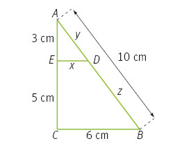

Áreas de figuras semejantes
El área de una figura es una propiedad que depende de la longitud de sus segmentos. En concreto, la
relación entre la longitud de una figura y su área es cuadrática.
Cuando se aplica el factor de semejanza, se conserva la relación cuadrática entre longitud y área, por lo
que en una figura plana (2D), provocará un aumento de su área proporcional al cuadrado.
Si la razón de semejanza entre las longitudes de una figura es k, la relación entre sus áreas, A y A’ es:
A’ = k∙L1 ∙ k∙L2 = k∙k ∙ L1∙L2 = k²∙A
Si la razón de semejanza entre las longitudes de una figura es k, entonces la razón entre sus áreas es k2.
Ejemplo
Los triángulos rectángulos ADE y ABC de la figura son semejantes ya que están en posición de Tales.

La razón de semejanza es:

Los lados desconocidos x e y miden:


Los perímetros de los dos triángulos miden:
P1=3+94+154=9𝑃1=3+94+154=9 cm y P2 = 8 + 6 + 10 = 24 cm